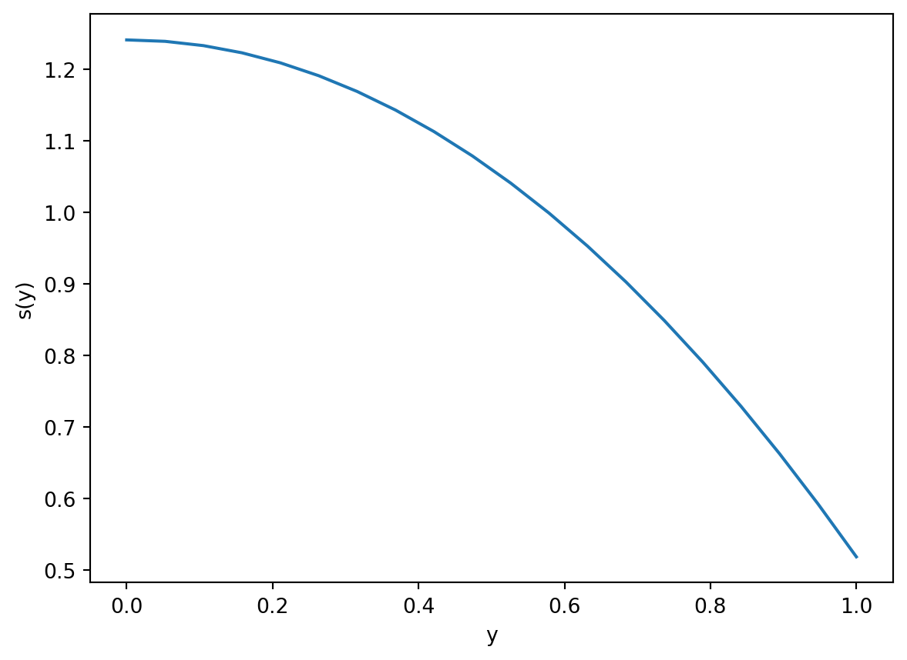
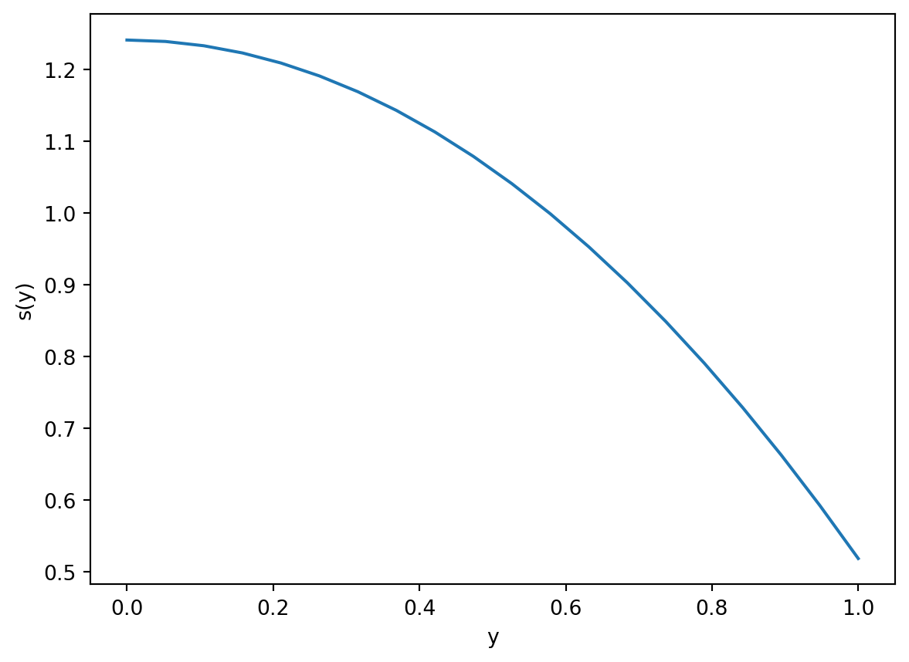
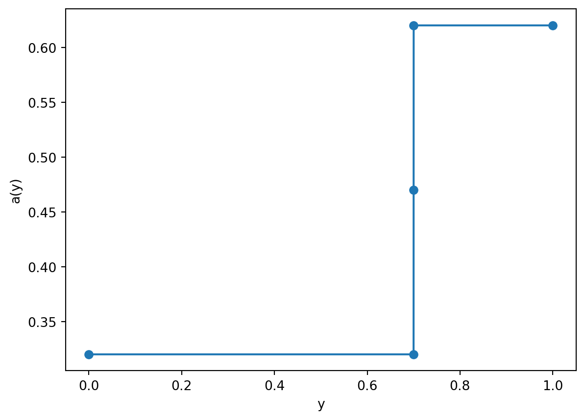

import numpy as np
import matplotlib.pyplot as plt
y = np.linspace(0, 1, 20)
plt.plot(y, 1 - 0.482*(3*y**2 - 1)/2)
plt.xlabel('y'); plt.ylabel('s(y)');
We now introduce a model that allows for two additional effects: an albedo that models ice dynamics and latitude variation; and a transport term, which allows for heat movement (primarily convection).
To begin, let us use a spherical coordinate system where \(\varphi\) is the latitude angle, with \(\varphi = 0\) at the equator and \(\varphi = \pi/2\) at the North Pole. Note that this differs from the traditional spherical coordinate system where \(\phi\) is the polar angle. It is moreover convenient to use \[ y = \sin\varphi, \quad y \in [-1, 1], \, \varphi\in [-\pi/2, \pi/2]. \] Our conservation equation takes the general form for the temperature, \(T(y, t)\): \[ C \frac{\partial T}{\partial t} = E_{\text{in}} - E_{\text{out}} + E_{\text{transport}}, \qquad t > 0 \tag{12.1}\] where we shall use the following: \[ \begin{aligned} E_{\text{in}}(y, t) &= Qs(y)(1 - \alpha(y)), \\ E_{\text{out}}(y, t) &= A + BT, \\ E_{\text{transport}}(y, t) &= k(\bar{T} - T), \end{aligned} \tag{12.2}\] Each of these terms we explain below in turn.
The above equation will be supplemented with initial conditions: \[ T(y, 0) = T_i(y). \]
We make the following remarks about \(E_{\text{in}}\).
Notice that now, compared to the previous model, we have weighted the incoming solar constant \(Q\) with a term \(s(y)\) and also our albedo no longer directly depends on temperature but instead depends on the latitude.
Points on Earth that are closer to the equator receive more direct sunlight and experience more hours of daylight on average. We thus define a function \(s(x)\) to account for this and consider the incoming radiation as weighted by \(Qs(y)\).
Note that the total solar input is calculated by a surface integral: \[ \int_{\theta = 0}^{\theta = 2\pi} \int_{\varphi = -\pi/2}^{\pi/2} Q s(y = \sin\varphi) (a^2 \cos\varphi) \, \mathrm{d}\varphi \mathrm{d}\theta = 4\pi a^2 Q \int_0^1 s(y) \, \mathrm{d}y = 4\pi a^2 Q, \] if the function \(s(y)\) has been normalised appropriately so that its integral is equal to one, and furthermore the radiation is assumed symmetric about the equator.
The above is equal to the solar flux intercepted by an area of the circular disk of the earth seen by the sun, which is \(\pi a^2 S\) for \(S = 1370 \mathrm{W}/\mathrm{m}^2\). Therefore \(Q = S/4 \approx 342 \mathrm{W}/ \mathrm{m}^2\).
Finally the function \(s(y)\) is fitted to data. We can assume it to be given by \[ s(y) = 1 - S_2 P_2(y), \qquad S_2 = 0.482, \quad P_2(y) = (3y^2 - 1)/2. \tag{12.3}\]
import numpy as np
import matplotlib.pyplot as plt
y = np.linspace(0, 1, 20)
plt.plot(y, 1 - 0.482*(3*y**2 - 1)/2)
plt.xlabel('y'); plt.ylabel('s(y)');
We assume that an ice sheet forms if the temperature is sufficiently low, and \(T < T_c = 10^\circ \mathrm{C}\). The ice forms at an ice line, where \(y = y_s\). We then have the following form form the albedo: \[ a(y) = \begin{cases} a_i = 0.62 & y > y_s, \\ a_w = 0.32 & y < y_s, \\ \frac{1}{2}(a_i + a_w) & y = y_s. \end{cases} \] Therefore we are using a discontinuous model for the albedo. Note that the ice boundary \(y_s\) is an unknown to be determined by the model.
import numpy as np
import matplotlib.pyplot as plt
ys = 0.7
y = np.array([0, ys-0.0001, ys, ys+0.0001, 1])
ai = 0.62; aw = 0.32;
a = np.piecewise(y, [y < ys, y == ys, y > ys], [aw, 0.5*(aw+ai), ai])
plt.plot(y, a, '-o')
plt.xlabel('y'); plt.ylabel('a(y)');
The above forms what is referred to as a free-boundary problem, as the boundary \(y = y_s\) is solved as part of the model. Because \(y_s\) is essentially determined by where the temperature reaches the critical value, i.e. \(T(y_s, t) = T_c\), then the above albedo not only depends on latitude, but also on the current temperature distribution as well.
The outgoing energy is approximated via the linear Budyko approximation discussed in Section 11.3. \[ E_{\text{out}} = A + BT, \] where \(A = 202 \mathrm{W}/ \mathrm{m}^2\) and \(B = 1.9 \mathrm{W}/(\mathrm{m}^2 {}^\circ \mathrm{C})\). These figures are taken from a 1993 paper by Graves, Lee, and North.
The next term we should consider is the transport. In the case of this simple model, transport is taken to be modelled via a “Newton law of cooling” type expression. We assume that \[ \text{rate of change of heat energy} = k(\bar{T} - T), \] where it can be verified (exercise) that the global mean temperature is the same as the hemispherically averaged temperature, i.e. \[ \bar{T} = \frac{1}{\text{surface area}} \iint T \, \mathrm{S} = \int_0^1 T(y) \, \mathrm{d}y. \] Above, we shall use a value of \(k = 1.6B\), again estimated based on data and studies.
This completes our review of all the components (Equation 12.2) that make up the EBM model (Equation 12.1).
Let \(T_\infty(y)\) be the steady-state temperature and \(\bar{T}_\infty\) be the corresponding global mean temperature. Then from setting the LHS of (Equation 12.1) to zero, we have the fact that \(T_\infty\) is given by solving the implicit equation: \[ T_\infty(y) = \Phi(T_\infty) = \frac{k\bar{T}_\infty + Qs(y)(1 - \alpha(y)) - A}{B + C}. \] It is important to remember that the albedo, \(\alpha(y)\), implicitly depends on \(T_\infty\) because at each location \(y\), we must decide if the temperature is less or greater than the threshold \(T_c\), which is the temperature of the ice line.
The above equation is somewhat tricky because of its implicit nature; it is made even trickier by virtue that multiple equilibria exist at the same parameter values. We will begin studying this problem, but before doing so, let us make a few remarks:
The next few chapters will investigate the above steady-state properties. However note that a numerical solution can be developed without the need to go through the above procedures, as well, albeit in a complicated fashion (In 2024, this was addressed during the Lecture 25; see the visualiser notes).